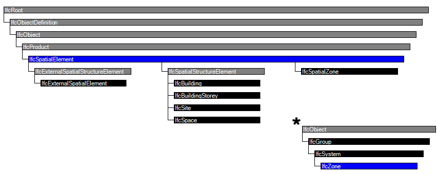

An example spatial tree. Orange classes belong to IFC context, blue classes belong
to `IfcSpatialElement`, and green classes belong to `IfcElement`. Blue arrows represent
an aggregation (or spatial (de)composition) relationship, and green arrows represent
a spatial containment relationship.
Spatial Tree
Spatial Tree
Spatial Tree

IfcSpace
A space represents an area or volume bounded actually or theoretically. Spaces are areas or
volumes
that provide for certain functions within a building, like a room.
IfcSpace
➡ IfcSpaces er hierarkiske, derfor skal de knyttes til et IfcBuildingStorey.
➡ Kan også organiseres i grupper (IfcZones) og som delrum (partial space)
➡ Kan bruges til at beskrive reglementkrav, som brand, termisk, belysning osv. Se mere her.
➡ I IFC er spaces altid defineret af indvendige vægflader. Se mere her.
➡ Se mere om hvordan IfcSpace højder defineres her.
IfcSpatialZone
➡ IfcSpatialZones er ikke hierarkiske.
➡ Kan overlappe hinanden eller IfcSpaces.
➡ I modsætning til IfcZones, kan have sin egen geometri og placering (men behøver ikke).
➡ Har prædefinerede typer som CONSTRUCTION, FIRESAFETY, LIGHTING, OCCUPANCY, THERMAL osv. Se mere her.
➡ Prædefinerede typer bestemmer hvilke egenskabssæt er tilgængelige.
IfcSpace
og
IfcSpatialZone
attributer
Attribute
Description
Name
A number or designator provided by the user or system for the spatial element.
LongName
Name of the spatial element provided by the user.
Description
Any additional description provided by the user.
ObjectType
reserved for typing of spatial elements in case of PredefinedType = .USERDEFINED.
EXAMPLE: A Name could be
"1-003", LongName may be "Office", and Description may be
"Corner office with habour view".